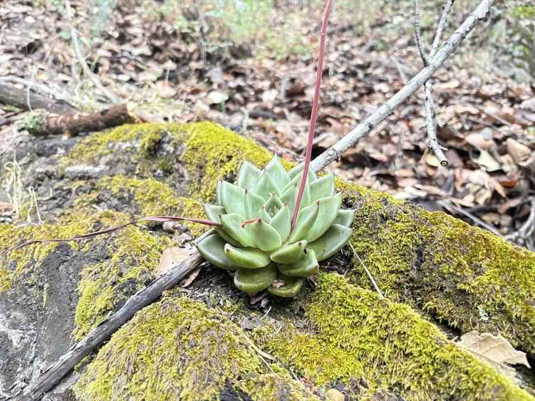

多肉植物 · 植物界
东云 Echeveria agavoides

景天科拟石莲花属多肉，叶片硬挺、形似龙舌兰，叶色翠绿、叶缘泛红，原产墨西哥，是株型端正的经典石莲花。
- 分类
- 门被子植物门纲木兰纲目虎耳草目科景天科属拟石莲花属
- 栖息环境
- 墨西哥中部干旱山地的岩坡与砾石地
- 地理分布
- 原产墨西哥中部，世界各地盆栽观赏
- 保护级别
- 暂无评估
物种志
东云为景天科拟石莲花属的肉质草本，叶片三角状卵形，长 5–8 厘米，先端尖硬，叶面翠绿色，表面光滑、白粉较少，叶缘在光照充足和温差大时呈鲜红色。叶片排列成紧凑的莲座状，直径 10–20 厘米，株型端庄，形似小型龙舌兰。花梗自叶腋抽出，花橙红色，花期春季至初夏；果实为蓇葖果。
东云原产墨西哥中部的干旱山地，喜阳光充足、凉爽干燥和通风良好的环境，耐旱、怕积水，夏季高温时需适当遮阴。它叶片硬挺、叶缘红艳，与柔软多粉的其他石莲花不同，显得刚劲有力。栽培用颗粒土，生长期干透浇透，给予充足光照可使叶缘更红；繁殖以叶插、分株和枝插为主，也可播种。
形态与习性
- 冠幅莲座直径 10–20 厘米
- 叶片三角状卵形，硬挺，先端尖
- 花期春季至初夏，花橙红色
- 光照喜充足光照，叶缘更红
- 水分耐旱，干透浇透
- 土壤颗粒土为主，排水良好
- 繁殖叶插、分株、枝插
- 特点株型似龙舌兰，叶缘泛红
趣味知识
- 东云的叶片硬挺、先端尖，形似龙舌兰，因此种加词意为“龙舌兰状”。
- 叶缘的红晕在光照足、温差大的秋冬季节最鲜艳。
- 东云系品种繁多，是石莲花杂交育种的重要亲本。